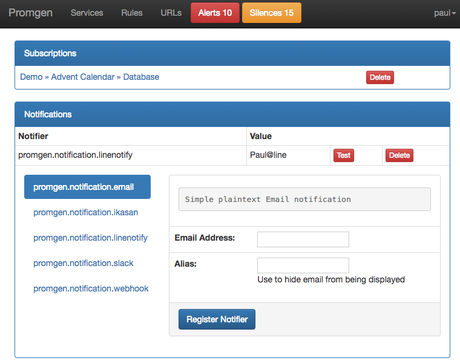

Notification Settings¶
Promgen allows the developer to easily subscribe to the notifications they want for the servies they use.
Subscription¶
From any project or service, a developer can use the Subscribe to Notifications button to subscribe. Then from the developer’s profile page, they should select the notification methods they wish to use.
Project and Service Notifications¶
Specific notifications can also be configured for each Project and Service.